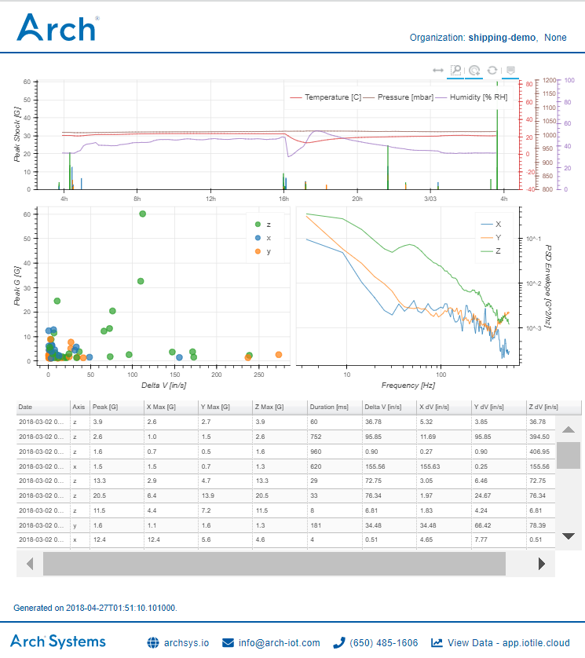

Introduction to IOTile Analytics¶
IOTile Analytics is a python package that is designed for interacting with data stored in IOTile.cloud using standard Data Science tools like numpy, pandas, bokeh, matplotlib etc.
You can use it to quickly generate beautiful interactive data visualizations that are just normal html files and can be shared with anyone and used offline.
For example, here’s a complex visualization of the shocks and vibrations experienced by a package during a trip:
Important
Make sure to check out the live interactive demo.
Click around and see the graphs change. Look for anomalies in the data. Zoom
in and out of the trip timeline. Generating an interactive report like this
just takes a single command with the analytics-host program included
in iotile-analytics-interactive.
This section serves as a basic introduction to the fundamental concepts and classes of IOTile Analytics as well as some example usage.
If you are looking for the quickest way to get something working and don’t want any other details, try the 5-Minute Quickstart Guide.
Prerequisites¶
You need to have either Python 2.7 or Python 3.5+ installed.
Everything else will be downloaded and installed automatically from pip.
Although you don’t need to explicitly install anything, the following packages
are used heavily in iotile_analytics so you may want to check them out:
| Package | Description |
|---|---|
| Bokeh | Interactive data visualization using html documents. |
| Pandas | Timeseries analysis tools |
| Numpy | Numerical data analysis in Python. |
Installation¶
A basic installation just needs three packages pip installed into your environment.
pip install -U iotile-analytics-core iotile-analytics-interactive iotile-analytics-offline
To check that everything is working, make sure you can access the analytics-host
application.
$ analytics-host --help
usage: analytics-host [-h] [-v] [-u USER] [-n] [-p PASSWORD] [-o OUTPUT]
[-t TEMPLATE] [-s] [-a ARG] [-c] [-l] [-b] [-d DOMAIN]
[analysis_group]
Run precreated analysis templates against devices or archives stored locally or in iotile.cloud.
analytics-host is designed to let people quickly run precreated analysis
operatation on their data. An example would be creating a summary report that
shows high level information about all data received from a given device or
inside of a particular archive.
You do not need to have an internet connection to use analytics-host. While
it can automatically pull your information from iotile.cloud using your login
credentials, it can also run most analyses locally using predownloaded data
that you have on your computer.
The most up-to-date reference information is always available online at:
http://iotile-analytics.readthedocs.io/en/latest/
Most of the analysis templates included with analytics-host create interactive
html web pages that embed graphs, controls and tables showing the results of
the analysis performed. These html files are designed to be opened in any
modern web browser and typically do not need an internet connection.
basic usage:
- analytics-host will ask you to confirm everything before you do it unless
you pass the -c flag indicating that you don't want this behavior.
- you typically need to specify an output path for where the results of your
analysis should be saved. You do this using the -o,--output <path> flag.
Some simple analysis templates can just print their output to the screen
but most require a file. Some analysis template generate many files so the
path you pass here will be interpreted as a directory where all of the files
should be saved.
- you need to identify the data you are looking for in the cloud by its *slug*
which is an alphanumeric identifier that starts with d-- for a device or
b-- for an archive.
For example, "d--0000-0000-0000-0123" or "b--0001-0000-0000-0100".
- if your analysis generates multiple files you can have analytics-host bundle
them into a zip file for you by using the `-b` flag.
examples:
To see what types of analysis you have installed run:
$ analytics-host -l
To see help information about a specific AnalysisTemplate, pass it by name
using -t along with -l:
$ analytics-host -l -t basic_info
To see this help information do:
$ analytics-host -h
If you have the package iotile-analytics-offline installed, you can download
all data from a specific device for offline access using:
$ analytics-host -t save_hdf5 <device slug> -o <output_path> -c
advanced usage:
Some analysis templates are configurable and require that you pass them
arguments. You can see if any arguments are accepted by running:
$ analytics-host -l -t <template name>
If you do need to pass arguments, you must pass them using the `-a, --arg`
option in the form of `name=value` where name is the parameter name
shown in the above command and value is the value you want to pass.
For example, if you had a template named "excited_report" that took a
parameter named title as a string and show_bold as a boolean, you would
invoke it using:
$ analytics-host -t excited_report -a "title=Your Title" -a show_bold=true
Note that you need to use quote around your first argument since it contains a
space. Quotes around an argument not containing a space are optional.
positional arguments:
analysis_group The slug or path of the object you want to perform
analysis on
optional arguments:
-h, --help show this help message and exit
-v, --verbose Increase logging level (goes error, warn, info, debug)
-u USER, --user USER Your iotile.cloud user name.
-n, --no-verify Do not verify the SSL certificate of iotile.cloud
-p PASSWORD, --password PASSWORD
Your iotile.cloud password. If not specified it will
be prompted when needed.
-o OUTPUT, --output OUTPUT
The output path that you wish to save the report at.
-t TEMPLATE, --template TEMPLATE
The name of the analysis template to run
-s, --include-system Also include hidden system streams. This only affects
reports created from device objects, not projects or
datablocks/archives
-a ARG, --arg ARG Pass an argument to the template you are running,
should be in the form name=value
-c, --no-confirm Do not confirm the analysis that you are about to
perforn and prompt for parameters
-l, --list List all known analysis types without running one
-b, --bundle Bundle the rendered output into a zip file
-d DOMAIN, --domain DOMAIN
Domain to use for remote queries, defaults to
https://iotile.cloud
Next Steps¶
Check out the Overview to get a sense of the high level organization of the package or just to the 5-Minute Quickstart Guide to see working examples immediately.